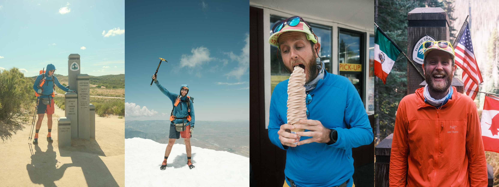

Naarm (Melbourne)
Statistical Consultant
nipaluna, lutruwita (Hobart, Tasmania)
2026-07-10
I think the two most important messages that people can get from a short course are:
– Hadley Wickham - from a github gist in 2015
talk link talk link
github @njtierney
email nicholas.tierney@gmail.com
njt.micro.blog
(Demo training.njtierney.com?)
One of the most useful things in a workshop is seeing the process - it convvinces you that the thing is worth learning.
these workshops help improve your mental model - which allows you to improve how you learn a thing, as you have more nodes.
how much time are you affording to sit down and solve things - your coding resilience.
njtierney.github.io/talk-teacher-over-content/